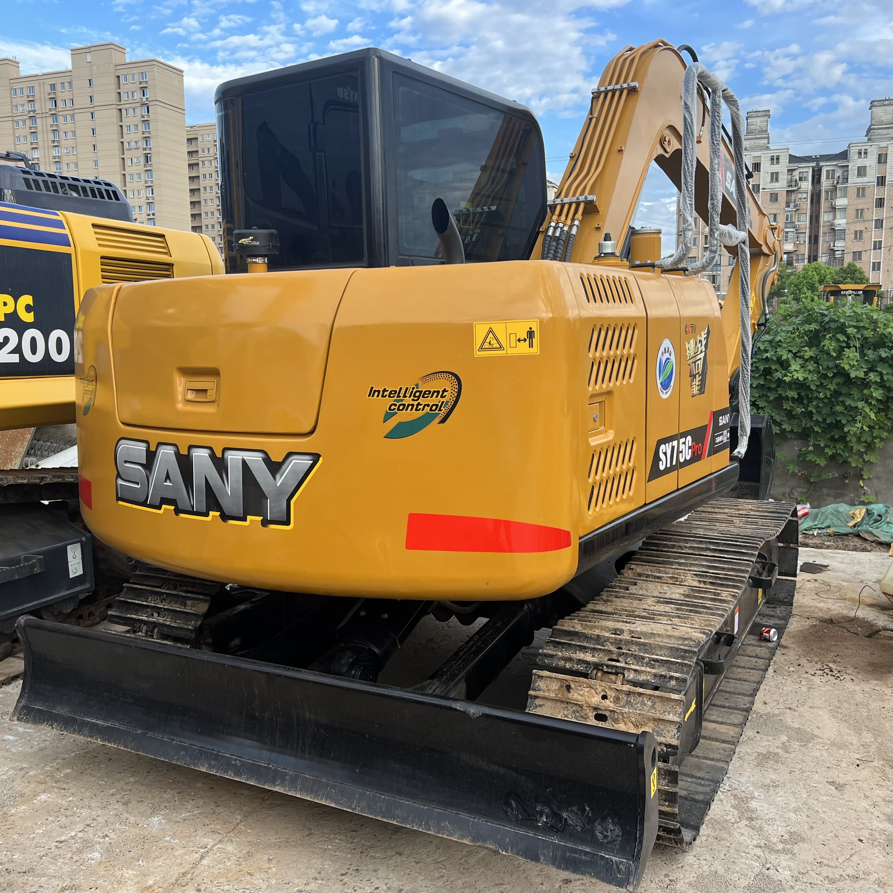

Refurbished SANY SY75 Excavator
The SANY SY75 excavator is a reliable, versatile, and powerful machine, designed for various heavy-duty tasks such as construction, landscaping, and material handling. Its compact design combined with impressive power makes it a valuable asset for small and medium-scale projects. When purchasing a refurbished SANY SY75, buyers are able to access all the features of a high-performance excavator at a significantly lower cost than buying new, making it an attractive option for businesses and contractors aiming for cost-effective, yet high-quality equipment.
Honestly, it's almost impossible to buy a brand new excavator from China. They either don't exist or are made in China. If a Chinese seller tells you their Caterpillar/Komatsu/Volvo/Kobelco/Hitachi is brand new, they're lying. Therefore, a refurbished excavator is your best bet.

Here are the detailed specifications for a refurbished SANY SY75C excavator:
Operating Weight and Dimensions
- Operating Weight: 7,200–7,500 kg
- Overall Length: ~6.5–6.8 meters
- Overall Width: ~2.3 meters
- Overall Height: ~2.7–2.8 meters
- Ground Clearance: ~380–400 mm
- Tail Swing Radius: ~1.9–2.1 meters
- Track Width: 450 mm standard
Engine and Powertrain
- Engine Model: Yanmar 4TNV98 or Isuzu 4LE2 turbo diesel
- Rated Power Output: ~55–57 kW (74–76 hp)
- Maximum Torque: ~300–330 Nm @ 1,500 rpm
- Fuel Tank Capacity: ~150–180 liters
- Gradeability: Up to 35°
- Travel Speed: 3.5–5.0 km/h
- Swing Speed: ~10–11 rpm
Hydraulic System
- Main Pump Type: Variable displacement axial piston pump
- Flow Rate: ~2 × 110–120 L/min
- System Pressure: Up to 28 MPa
- Hydraulic Oil Capacity: ~160–180 liters
- Boom Cylinder Bore: ~100 mm
- Arm Cylinder Bore: ~85 mm
- Bucket Cylinder Bore: ~75 mm
Performance Metrics
- Bucket Capacity: 0.3–0.35 m³
- Max Digging Depth: ~4.1–4.3 meters
- Max Reach (Horizontal): ~7.2–7.5 meters
- Max Dump Height: ~4.8–5.0 meters
- Bucket Digging Force: ~55–60 kN
- Arm Digging Force: ~38–42 kN
Cab and Operator Features
- Cab Type: ROPS/FOPS certified
- Display: LCD monitor with diagnostics and fuel tracking
- Controls: Dual joystick pilot controls with adjustable sensitivity
- Comfort: Air-conditioned cab, adjustable suspension seat
- Visibility: Panoramic glass with optional rear-view camera
Smart Features and Efficiency
- Eco Mode: Adaptive engine output for fuel savings
- Auto Idle: Reduces RPM during inactivity
- Centralized Lubrication: Optional for reduced maintenance
- Telematics Ready: Some refurbished units support remote diagnostics
Attachments Compatibility
- Standard Bucket: 0.3–0.35 m³
- Optional Tools: Hydraulic breaker, grapple, compactor, ripper
- Quick Coupler: Hydraulic or manual options available
Refurbishment Scope
Refurbished SY75 units typically include:
- Engine overhaul (injectors, turbo, seals)
- Hydraulic pump recalibration or replacement
- Electrical system rewiring and sensor testing
- Cab restoration (seat, controls, HVAC)
- Structural repairs (boom welding, bushing replacement, repainting)
Overview of the SANY SY75 Excavator
The SANY SY75 falls into the 7.5-ton category, making it ideal for projects where space and power need to be balanced. Its size makes it versatile enough for urban construction, road work, and landscape jobs while still providing the necessary strength for excavation, trenching, and other heavy lifting tasks. With a reputation for durability and high performance, the SY75 is an excavator that businesses can depend on to handle demanding workloads.
A refurbished SY75 provides all of these benefits, but at a fraction of the price of a new model. Refurbished machines undergo rigorous checks, repairs, and updates, ensuring they meet the same high standards as new models. For businesses operating on tight budgets, purchasing a refurbished SY75 excavator presents a prime opportunity to boost their capabilities without overspending.
Key Features of the SANY SY75 Excavator
The SANY SY75 offers a blend of advanced technology, durability, and user-friendly features that make it a top contender in the compact excavator market. Here are some of the primary features of the SY75:
Engine and Performance
-
Engine Type: The SY75 is equipped with a Kubota V3307 engine, providing a powerful output of 55.4 kW (74.3 horsepower). Known for its fuel efficiency and low emissions, the Kubota engine ensures that the SY75 delivers consistent performance while minimizing operating costs.
-
Hydraulic System: The hydraulic system on the SY75 is designed for high efficiency, offering precise control during digging, lifting, and grading tasks. The advanced system ensures that power is delivered efficiently, reducing fuel consumption while maximizing performance.
-
Fuel Economy: Thanks to the combination of the Kubota engine and the advanced hydraulic system, the SY75 delivers excellent fuel economy. It allows contractors to save on operational costs while ensuring that the excavator remains productive throughout its workday.
Digging and Lifting Capabilities
-
Maximum Digging Depth: The SANY SY75 offers a maximum digging depth of 5.4 meters (17.7 feet), which is well-suited for deep excavations, trenching, and foundation work. This depth allows for a wide range of tasks, from utility installations to large-scale landscaping projects.
-
Lifting Capacity: The SY75 has a lifting capacity of approximately 2,800 kg (6,200 lbs) at full reach, providing the strength necessary for material handling, lifting heavy objects, or unloading materials from trucks or storage areas.
-
Bucket Capacity: The bucket on the SY75 typically ranges from 0.25 to 0.3 cubic meters, depending on the attachment, which ensures versatility across different tasks. Whether it’s moving earth, rocks, or debris, the bucket allows for fast and efficient loading.
Compact Design for Greater Maneuverability
-
Tail Swing Radius: With a reduced tail swing radius, the SY75 is designed for tight spaces, ensuring that it can operate efficiently in confined environments such as residential areas, road work, or urban infrastructure projects. Its compact size means that it can maneuver in small spaces where larger excavators would struggle to operate.
-
Undercarriage and Stability: The undercarriage of the SY75 is designed for stability even in difficult conditions. Its tracks provide optimal traction, and the excavator performs well on uneven or sloped ground. This ensures that operators can work safely and efficiently, even in challenging terrains.
Operator Comfort and Safety
-
Spacious Operator Cabin: The cabin of the SY75 is designed to offer the operator a comfortable working environment. It is equipped with adjustable seating, easy-to-read controls, and excellent visibility, making it easier for operators to monitor the worksite and operate the machine efficiently.
-
Safety Features: The SY75 is equipped with safety features such as ROPS (Roll-Over Protection System) and FOPS (Falling Object Protection System), ensuring the safety of the operator during operation. The cabin is well protected, reducing the risk of injury in the event of an accident.
Advantages of Purchasing a Refurbished SANY SY75
Opting for a refurbished SANY SY75 excavator has multiple benefits, particularly for businesses aiming to reduce capital expenditure while maintaining high operational standards. Here are some of the reasons why buying a refurbished SY75 is a smart choice:
Cost Savings
The most immediate advantage of purchasing a refurbished SY75 is the substantial cost savings. Refurbished excavators can be 30-50% cheaper than new models, allowing businesses to add reliable, high-performance machinery to their fleet without exceeding their budget. This cost reduction is ideal for companies that need multiple machines or are working on projects with tight margins.
Certified Quality and Performance
A refurbished SY75 undergoes a comprehensive inspection and restoration process, ensuring that all components—from the engine and hydraulics to the undercarriage and electrical systems—are in optimal working condition. Certified refurbishers use original parts and high-quality replacements to restore the machine to factory standards, ensuring the same performance and reliability as a new machine.
Reduced Depreciation
A new excavator depreciates quickly, with most of its value lost in the first few years. A refurbished SY75 has already experienced most of its depreciation, meaning that businesses purchasing the machine will retain more of their investment over time. This allows for a higher return on investment (ROI) over the machine's lifetime, especially when well-maintained.
Environmental Impact
Choosing a refurbished excavator is an environmentally responsible decision. Refurbishing equipment rather than purchasing new reduces the demand for raw materials and manufacturing processes, which helps conserve resources. Additionally, refurbished machines are often upgraded to improve fuel efficiency, further reducing their environmental impact during operation.
Maintenance Tips for a Refurbished SANY SY75
To get the most out of a refurbished SANY SY75 excavator, it’s essential to follow proper maintenance procedures. Here are some tips for keeping the machine in top working condition:
-
Regular Inspections: Check the hydraulic systems, engine, and undercarriage regularly for signs of wear. Promptly address any issues to avoid costly repairs.
-
Scheduled Service: Follow the manufacturer’s service recommendations, including oil changes, filter replacements, and fluid checks. Keeping up with regular servicing ensures that the excavator operates efficiently and has a long service life.
-
Track Maintenance: Maintain the tracks by checking for proper tension and wear. Tracks that are too loose or too tight can affect the excavator’s performance and cause unnecessary wear on the undercarriage.
-
Hydraulic System Care: The hydraulic system is crucial to the machine’s performance. Ensure proper fluid levels and check for leaks regularly. If any leaks are found, they should be addressed immediately to prevent further damage.
Conclusion
The SANY SY75 excavator, whether new or refurbished, is a powerful and versatile machine that excels in a wide range of construction and excavation tasks. The refurbished model, in particular, offers an excellent value proposition by combining affordability with the same high-level performance as new machines. With key features such as a Kubota V3307 engine, efficient hydraulic system, and compact design, the SY75 delivers exceptional performance while minimizing operating costs.
For businesses looking to maximize their investment and maintain a cost-effective operation, purchasing a refurbished SY75 excavator is a wise choice. When properly maintained, it provides years of reliable service, making it a valuable asset for any construction or excavation fleet.
Our Commitment
- 2 years / 4000 hours warranty.
- EPA certified.
- No sweatshop labor.
Contacts

- [email protected]
- Youtube Instagram Facebook
- Navigation: G206 (Sishu Bridge) in Changfeng County, Hefei City, Anhui Province, 200 meters north to the east